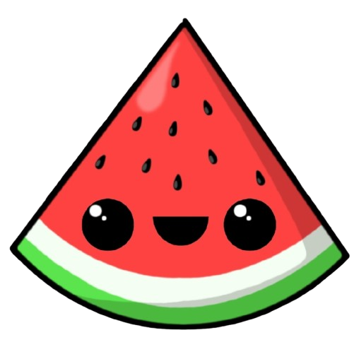

Welcome to Fruit Slice

0
Be a ninja and slice fast!

Start Game
This game is a personal copy edition of the classic fruit slice game. The goal is to slice the fruit as fast as possible with computer performing random steps.
You will find a total of 11 fruits in the game.
You will find a menu where you can adjust the volume of the background music and the fruit slice sound.